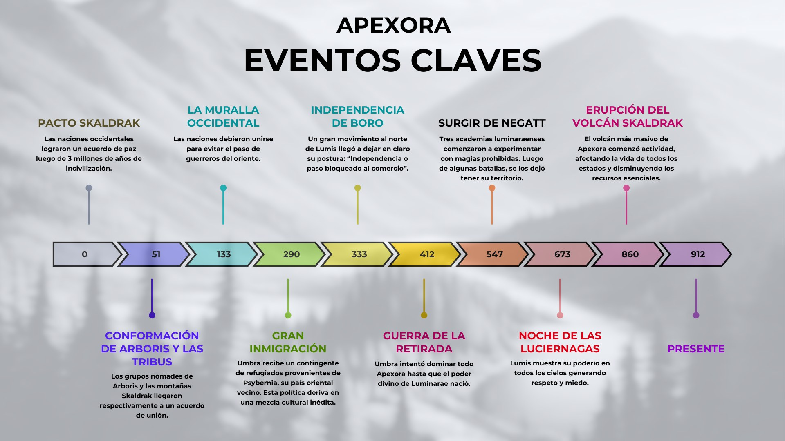

Pacto Skaldrak
Las naciones occidentales lograron un acuerdo de paz luego de 3 millones de años de incivilización.
Conformación de Arboris y las Tribus
Los grupos nómades de Arboris y las montañas Skaldrum llegaron respectivamente a un acuerdo de unión.
La Muralla Occidental
Las naciones debieron unirse para evitar el paso de guerreros del oriente.
Gran Inmigración
Umbra recibe un contingente de refugiados provenientes de Psybernia, su país oriental vecino. Esta política deriva en una mezcla cultural inédita.
Independencia de Boro
Un gran movimiento al norte de Lumis llegó a dejar en claro su postura: "Independencia o paso bloqueado al comercio".
Guerra de la Retirada
Umbra intentó dominar todo Apexora hasta que el poder divino de Luminarae nació.
Surgir de Negatt
Tres academias luminaraenses comenzaron a experimentar con magias prohibidas. Luego de algunas batallas, se los dejó tener su territorio.
Noche de las Luciérnagas
Lumis muestra su poderío en todos los cielos, generando respeto y miedo.
Erupción del Volcán Skaldrak
El volcán más masivo de Apexora comenzó actividad, afectando la vida de todos los estados y disminuyendo los recursos esenciales.
Apexora hoy
El punto donde comienzan las historias de sus héroes y villanos actuales — como los Guardianes de Apexora.
La invasión de Vasané-Nalú
La Tribu Zzamua, llegada desde La Urdimbre de Sylvaris, invade y toma la localidad sinfaliense de Vasané-Nalú. La secta sobria "Día del Juicio a los Ignorantes" incentivó la toma a cambio de someter a los Moradores.